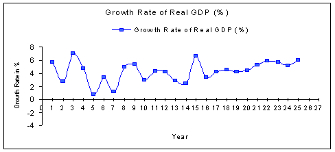

|
|
|
|
|
|
|
|
|
|
|
|
|
|
|||||||||||||||||||||||||||||||||||||||||||||||||||||||||||||||||||||||||||||||||||||||||||||||||||||||||||||||||||||||||||||||||||||||||||||||||||||||||||||||||||||||||||||||||||||||||||||||||
|
|
|||||||||||||||||||||||||||||||||||||||||||||||||||||||||||||||||||||||||||||||||||||||||||||||||||||||||||||||||||||||||||||||||||||||||||||||||||||||||||||||||||||||||||||||||||||||||||||||||||
|
|
|
An Analysis of Growth Trend and Changing Structure
of GDP in Bangladesh
Kamrun
Nahar*
|
|||||||||||||||||||||||||||||||||||||||||||||||||||||||||||||||||||||||||||||||||||||||||||||||||||||||||||||||||||||||||||||||||||||||||||||||||||||||||||||||||||||||||||||||||||||||||||||||||
|
Year |
Real GDP |
Growth Rate % |
|
1975-76 |
293820 |
5.7 |
|
1976-77 |
301670 |
2.7 |
|
1977-78 |
323010 |
7.1 |
|
1978-79 |
338520 |
4.8 |
|
1979-80 |
341300 |
0.8 |
|
1980-81 |
352880 |
3.4 |
|
1981-82 |
357220 |
1.2 |
|
1982-83 |
374700 |
4.9 |
|
1983-84 |
395030 |
5.4 |
|
1984-85 |
406930 |
3.0 |
|
1985-86 |
424590 |
4.3 |
|
1986-87 |
442340 |
4.2 |
|
1987-88 |
455130 |
2.9 |
|
1988-89 |
466610 |
2.5 |
|
1989-90 |
497530 |
6.6 |
|
1990-91 |
514440 |
3.4 |
|
1991-92 |
536190 |
4.2 |
|
1992-93 |
560230 |
4.5 |
|
1993-94 |
583840 |
4.2 |
|
1994-95 |
609790 |
4.4 |
|
1995-96 |
642440 |
5.3 |
|
1996-97 |
680210 |
5.9 |
|
1997-98 |
718670 |
5.7 |
|
1998-99 |
756120 |
5.2 |
|
1999-2000 (provisional) |
801710 |
6.0 |
Source: Government of Bangladesh, Ministry of Finance, Economic Survey of Bangladesh 2000, (Bengali), pp. 184-185.
Analysis of Table 1: During 1975-76, Real GDP was recorded as 293820 million takas, which from the next fiscal years increased slowly and it continued until 1993-94 in Bangladesh. The size of Real GDP grew twice after 20 years in 1994-95. Real GDP increased in 801710 million takas in 1999-2000.
From 1975 to 2000, the growth rates of Real GDP fluctuated from 1 to 6 percent. The highest growth rate was counted as 7.1 percent in 1977-78 and the lowest rate found as 0.8 percent in 1979-80. Most of the years, the growth rate was limited between 4 and 5 percent. During the 1990s, the growth rates of Real GDP increased more visibly than those estimated during the 1980s. This economic development was helped by the fall of the population growth rate. Population grew at 2.2 percent annually during the 1980s, while the growth rate of Real GDP was low. But population growth rate reduced to 1.7 percent during the 1990s. 17 In 1999-2000, Real GDP improved to 6 percent compared to 5.2 percent of the previous years.

GDP Growth Trend of Individual Sectors
The GDP growth trend of Individual Sectors was not very dynamic. Only industrial GDP grew at a better rate. The following table will present the real picture.
Table- 2:
GDP Growth Trend of Individual Sectors (1981-2004) (in %)
|
Year |
Sectors |
Total GDP |
Per Capita GDP |
||
|
Agriculture |
Industry |
Service |
|||
|
1981-2004 |
2.77 |
6.51 |
4.33 |
4.41 |
2.54 |
|
1981-85 |
2.68 |
5.70 |
3.83 |
3.72 |
1.54 |
|
1986-90 |
2.40 |
5.86 |
3.58 |
3.74 |
1.50 |
|
1991-95 |
1.55 |
7.47 |
4.15 |
4.39 |
2.36 |
|
1996-2000 |
4.88 |
6.44 |
4.81 |
5.21 |
3.83 |
|
2001-2004 |
2.23 |
7.24 |
5.51 |
5.12 |
3.70 |
Source: Iqbal Ahmed, "GDP Experience, structural changes" New age, 16 June, 2004, p.1, compiled and rearranged by professor M.Z. Abedin, Institute of Bangladesh Studies (IBS), University of Rajshahi, Rajshahi, Bangladesh.
Analysis of Table 2: From 1981 to 2004, during these long 23 years, the growth rate of Agricultural GDP was 2.77 percent, which was no doubt poor. At the same time, Industrial GDP grew at the rate of 6.51 percent, which was more than two times bigger than that of agriculture. Service Sector’s GDP increased at 4.33 percent, which was bigger than the agricultural percentage. In the same fiscal years, the growth rate of Total GDP was 4.41 percent and that of Per Capita GDP was 2.54 percent only.
The growth rate of Agricultural GDP was 2.68 percent in 1981-85, which was not hopeful. For the next years, the rate went down. A precipitous fall came to notice in 1991-95. The next year, it regained nearly three times increase, compared to the size of the previous years. Again in 2001-2004, the growth rate came down to 2.23 percent. In these long 20 years, the growth trend of Agricultural GDP was never shining.
The growth rate of Industrial GDP was 5.70 in 1981-85. From the latter years, the size of percentages increased slowly. Its significant growth was observed for the first time in 1991-95, the highest growth of all with the size of 7.47 percent. Though the rate came down the next years, it recovered its condition again in 2001-2004, while the growth rate rose to 7.24 percent.
Service Sector’s GDP grew at the rate of 3.83 percent in 1981-85. It increased slowly over the years and went up to 5.51 percent in 2001-2004, which was rather optimistic.
Total GDP grew at 3.72 percent in FY 1981-85, which took long 20 years to grow to some degrees in 2001-2004. The growth rate of Per Capita GDP was 1.54 percent in 1981-85. It slowly rose and reached to 3.70 percent in 2001-2004, which was not enough at all.

According to S.A Safa and R. Begum, despite robust population growth, political disturbance, ‘failures of governments’, corruption and lawlessness, ‘rumble GDP and GNP of the country have increased with acceleration.’18
Changing Structure of GDP in Bangladesh
The structure of GDP changed a lot through the long years. How these changes were and whether they were good or bad will be discussed below by analyzing some tables.
Table- 3:
Changing Structure of GDP in Bangladesh (1949/50-2001/2002) (in %)
|
Year |
Sectors |
Total |
||
|
Agriculture |
Industry |
Service (Tertiary) |
||
|
1949/50 |
70 |
4 |
26 |
100 |
|
1959/60 |
62 |
5 |
33 |
100 |
|
1965/66 |
57 |
8 |
35 |
100 |
|
1969/70 |
55 |
10 |
35 |
100 |
|
1973/74 |
49 |
11 |
40 |
100 |
|
1974/75 |
49 |
10 |
41 |
100 |
|
1980/81 |
44 |
11 |
45 |
100 |
|
1984/85 |
41 |
10 |
49 |
100 |
|
1990/91 |
32 |
12 |
56 |
100 |
|
1994/95 |
26 |
15 |
59 |
100 |
|
1999/2000 |
25 |
15 |
60 |
100 |
|
2001/2002 |
24 |
16 |
60 |
100 |
Source: Statistical Pocket Book of East Pakistan, different years & BBS, Statistical Year Books, different years, GOB, Economic Survey of Bangladesh, different years.
Analysis of Table 3: Major components of GDP are agriculture, industry and service in Bangladesh. During 1949-50, agriculture was the dominant sector in contribution to GDP, but changes have come over the years and service sector has become conspicuous now.
In the period of 1949-50, agricultural contribution to GDP was 70 percent. During 1959-60, share of agriculture in GDP started to fall and it continued until FY 1973-74. From then, for two fiscal years its status remained stagnant and after that the condition was not so bad as to be feared awfully, because the green revolution helped in increase in rice production in those years. But the fall precipitated from FY 1990-91, when industries started to grow exuberantly and in FY 2001-2002, the percentage of agriculture in GDP reduced to only 24, which was a matter of national concern.
In 1949-50 industrial establishments were poor because of the historical background. Under British rule, governments didn’t give proper attention in the establishment of necessary industries in East Bengal. After the separation of Indian sub-continent in 1947, the Pakistani government was rather more eager to set up industries in West Pakistan than in the East. So, though industries were growing and their contribution was rising, it could never be very significant before independence of Bangladesh and agriculture remained the dominant sector in GDP percentage. But, after long twenty years, industry showed improvement in contribution to GDP in 1969-70, comparing with that of FY 1949-50. Industrial share in GDP percentage remained stagnant for some years from FY 1973-74 to FY 1984-85. The growth of this sector started in 1990-91, when political environment was relatively stable and foreign investment was appreciated and welcomed by the then government. In 2001-2002, though its contribution rose to 16 percent, it still remained behind compared to the other two sectors.
In 1949-50, service sector had 26 percent contribution to GDP. This share of this sector grew from the following fiscal years and this growth was stagnant for the latter two years. But soon it grew fast and then slowly again in the next years. But it reached 60 percent of GDP in 2001-2002, making this sector the largest of all in GDP contribution.


It is noticeable that all sectors couldn’t contribute to GDP equally. This imbalance can’t be a good sign of economic progress.
Conclusion
Dr. Debapriya Bhattachariya, Executive Director of Centre for Policy Dialogue (CPD), recommends that if the GDP growth rate of Bangladesh rises to 8 percent and sustains this position constantly, Bangladesh may develop in 2020. By raising the growth rate of exports to 20.83 percent and reducing the growth rate of imports to 17.58 percent, we can achieve this desirable growth rate of GDP. 19 With his valuable comment, the following issues can also be considered to improve GDP growth rate.
Agricultural and
Industrial GDP are small in recent years, but Service Sector’s GDP is
swelling. This kind of imbalanced swell of one sector except other two
causes inflation.
20 The contribution of
all sectors to GDP needs to increase equally. For this reason, modernization
in agriculture, distribution of subsidies, interest-free loans among
peasants and reformation of traditional land-owner law can be helpful. On
the other hand, for the balance between the growth rates of Large Scale
Industries and Small & Cottage Industries, it is necessary to bring them
under government care. Government should increase domestic investments in
proper areas with efficient hands. Two kinds of investments are prevailed,
as, personal investment and bank loans. There are numerous examples of those
people, who take bank loans for the establishment of industries, but don’t
establish any.
21
This kind of misuse of investment hampers GDP growth, and should not occur
again before the eyes of ministers. Poverty reduction and increase in
literacy rate can be the pioneers in the economic development. Stable
political environment and good governance are also essential. Population
growth needs to be muzzled by family planning, government publicity and by
law.
---------
About the author: Kamrun Nahar is doing her M.Phil on “Political Violence in Bangladesh” at Institute of Bangladesh Studies (IBS) under the University of Rajshahi in Bangladesh. She is also a published author of two Bangla novels.
References:
1.
“Bangladesh”,
http://www.cia.gov/cia/publications/factbook/geos/bg.html
2. “Bangladesh Country Background Information”,
http://www.tracebd.org/bd_bg.html
3. “Meaning of Growth”, http://www. hyperdictionary.com/dictionary/growth
4. Ibid.
5.“Economic Growth Rate”,
http://www.investorwords.com/1642/economic_growth_rate.html
6. “Definition”,
http://www.free-definition.com/Gross-domestic-product.html
7. “Definition of GDP/ Gross Domestic Product”,
http://economics.about.com/cs/economicsglossary/g/gdp.htm
8. Ibid.
9. “Definition”, http://www.free-definition.com/Gross-domestic-product.html
& “Gross Domestic Product”,
http://www.investorwords.com/2240/Gross_Domestic_Product.html
10.
‘Rice’, http://www.supportfree.com/countrypages/bangladesh/68.htm
11. “Agriculture”,
http://www.supportfree.com/countrypages/bangladesh/67.htm
12. ‘Forestry Products,’
http://www.supportfree.com/countrypages/bangladesh/72.htm
13. From
the ‘Hand-note’ made by Professor M. Zainul Abedin, Institute of Bangladesh
Studies (IBS), University of Rajshahi.
14. “Economy of Bangladesh,”
http://bangladesh2000.com/bdall/economy.html
15. Ibid.
16. “Imports record 23pc rise. ICT exports can fetch $250m”, The financial
Express, March 15, 2005, p-1 & “Bangladesh”,
http://www.cia.gov/cia/publications/factbook/geos/bg.html
17.
“Bangladesh Country Background Information”,
http://www.tracebd.org/bd_bg.html
18. Syed
Ahamed Safa and Rokeya Begum, “Growth of GDP and GNP shows Dynamism”, Dhaka:
The Independent, 23 February, 2005
19. “Breaking the LDC barrier: 8pc GDP growth rate needed till 2020:
Debapriya”, http://www.cpd_bangladesh.org/media/press_210902.html
20.
http://www.power_xs.de/delta/ec81-87.html
21. Ajay Dasgupta,
Bangladesh Economy 1993-2000, (Dhaka: Agamee
Publication, 2001), p.14
|
|
|
|
|